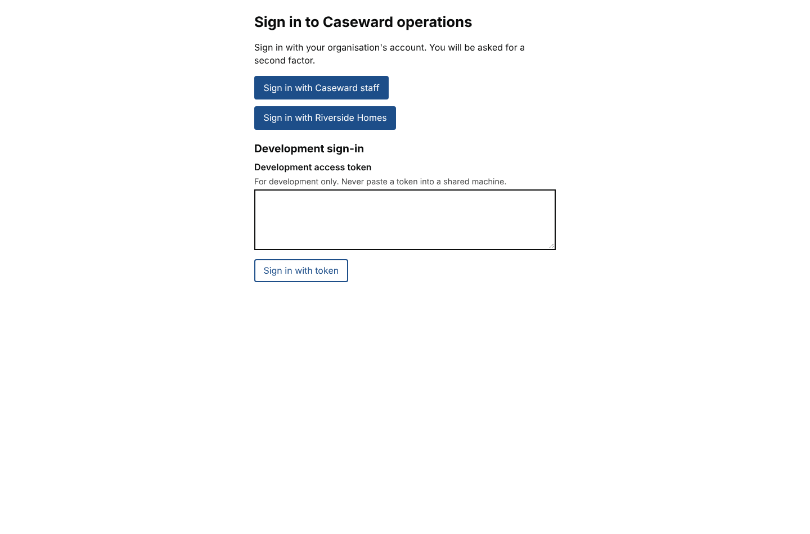
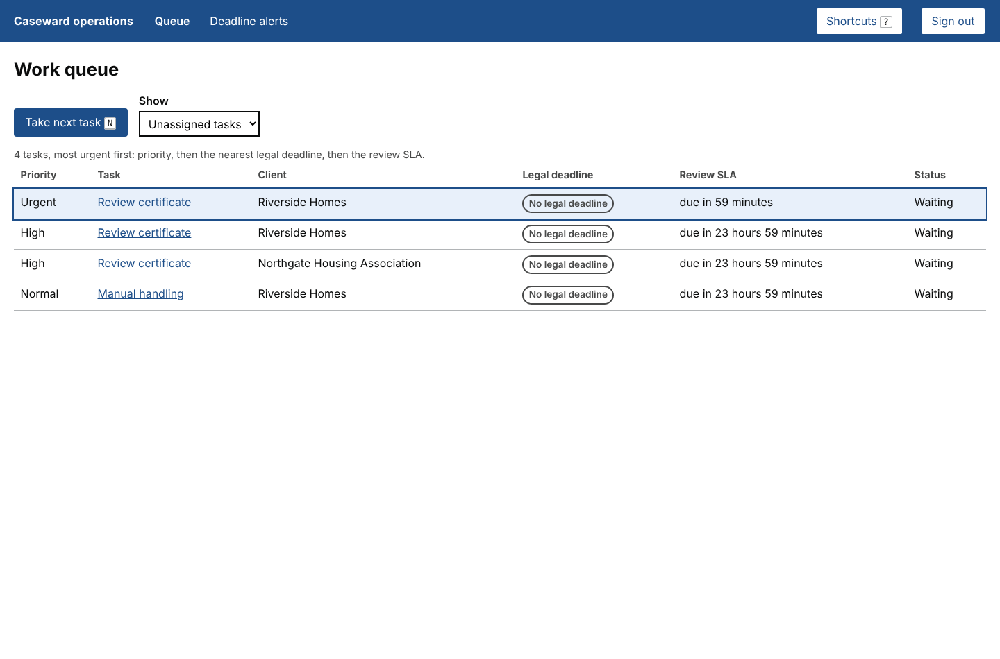
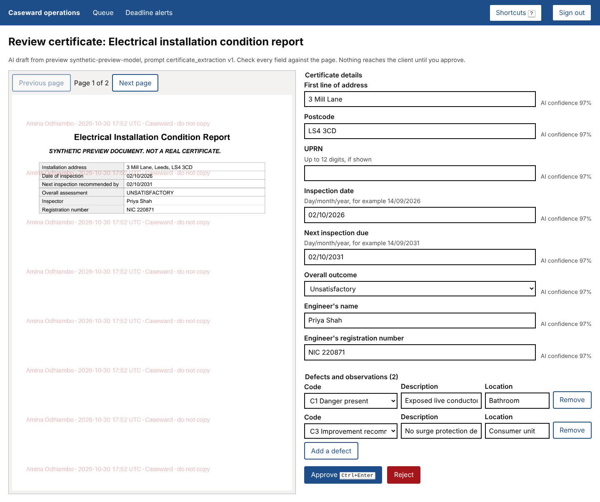
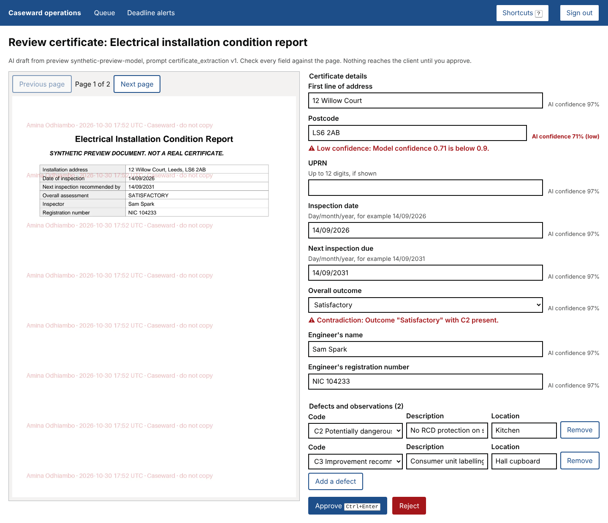
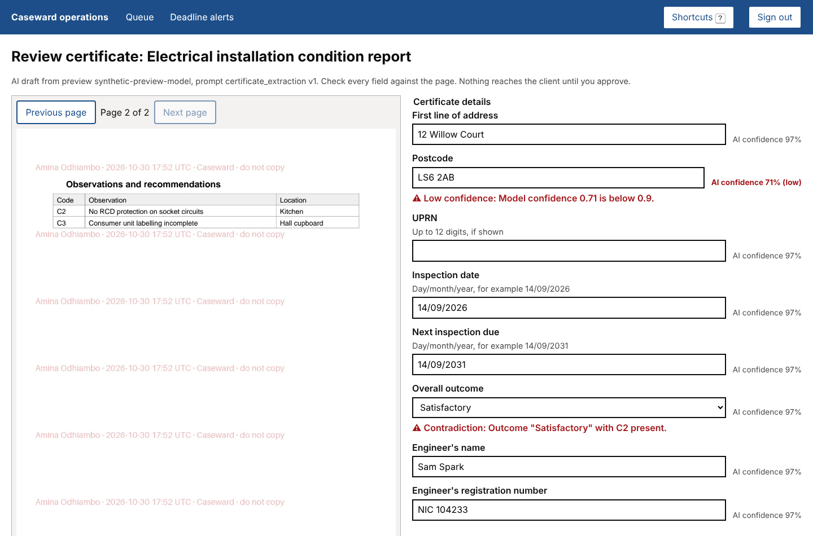
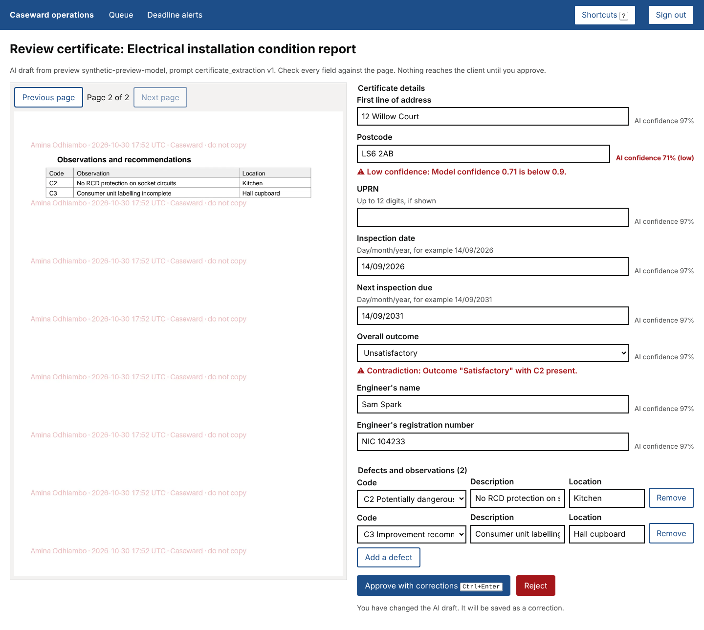
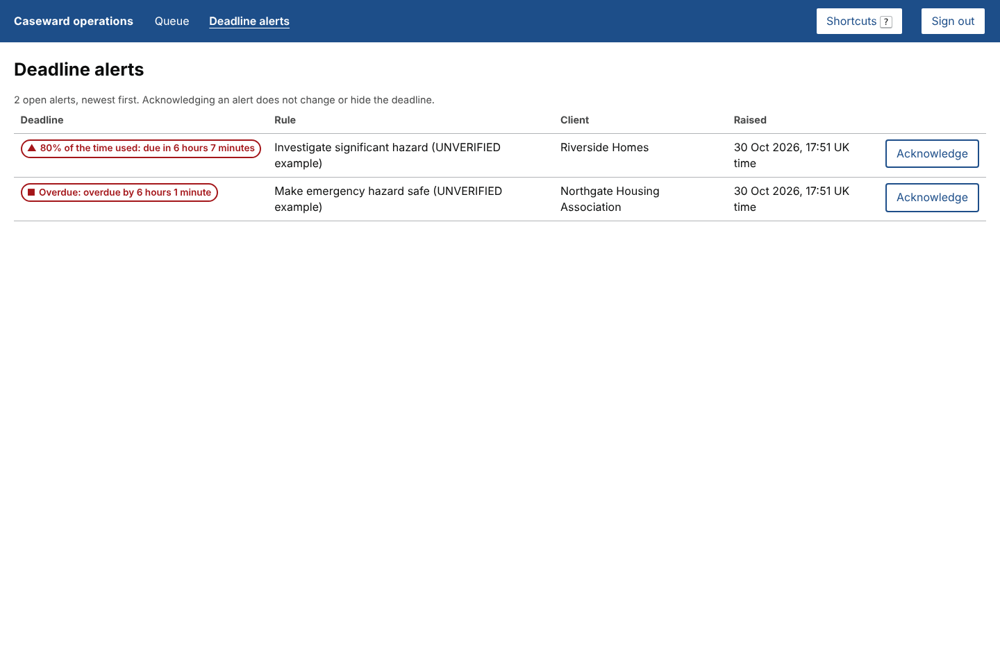
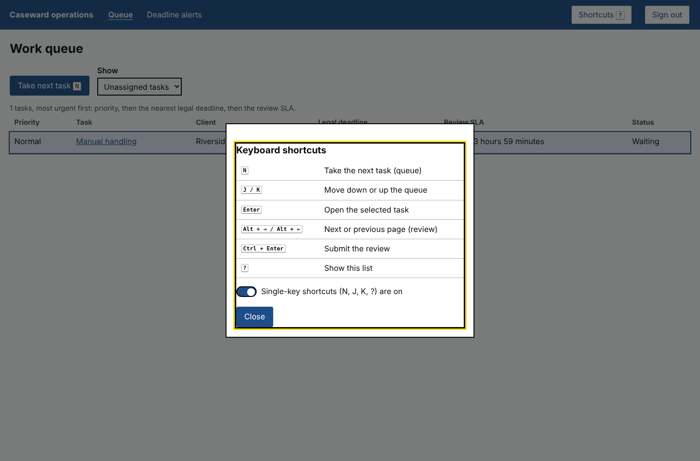

What a case handler sees during a shift: sign in, take the most urgent task, check an AI draft against the certificate, and deal with deadline alerts. These screens come from the console running against the real backend and database, filled with synthetic landlords, properties and certificates.

One button for each identity provider. Multi-factor authentication is required for every sign-in. The development token form at the bottom only appears in development.

Most urgent first. The certificate with a C1 (danger present) is marked Urgent, with a one-hour review time. The fire risk assessment has no AI form yet, so it went to manual handling. Press N to take the next task.

The certificate page sits beside the fields the AI filled in. Each field shows the AI's confidence. Nothing reaches the landlord until a person approves it.

This certificate says "Satisfactory" but lists a C2 (potentially dangerous), so it is flagged as a contradiction. The postcode was read with low confidence. Each warning sits next to its field and is read out with it by screen readers.

Alt + → turns the page without leaving the form. Page images carry the viewer's name and the time, and the original file is never downloaded.

After changing the outcome to Unsatisfactory, the button becomes "Approve with corrections", so the record shows that a person changed the AI's draft. Approving here created the inspection and both defects in the real database.

Raised by the background sweep. An emergency hazard at Northgate is overdue, and a significant hazard at Riverside has used 80% of its time. Each state is shown in words and a shape, not by colour alone. Acknowledging an alert never hides the deadline.

Press ? to see them all. Single-key shortcuts can be switched off, and they never fire while typing in a field.
The "do not copy" watermark runs across the certificate's own text, for example over "Date of inspection" in step 4. It makes the page harder to read and will be fixed next: lighter, and placed between the lines of text.